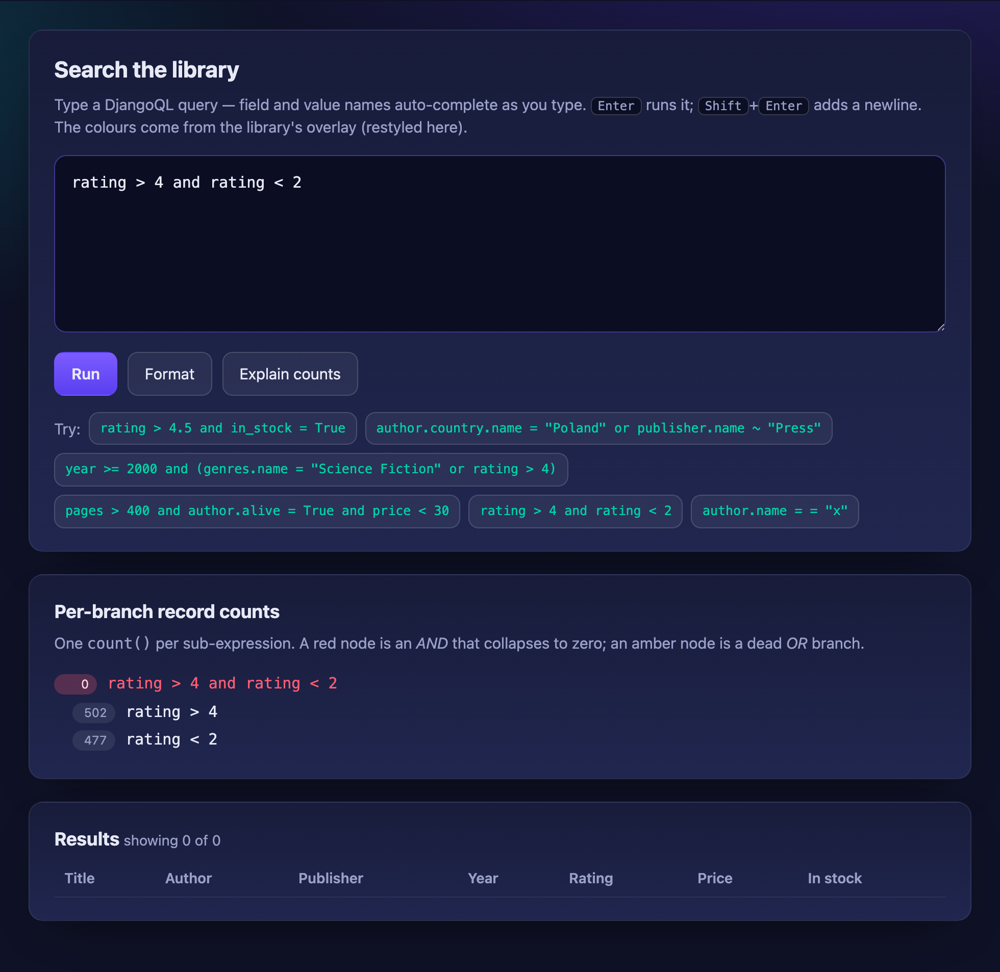

Query breakdown — record counts per branch¶
How many rows does each part of a query match? For
genre = 1 and rating = 5, you might want to see that genre = 1 matches 100
rows, rating = 5 matches 100 rows, but together they match only 2 — and which
branch is the one that collapses the result.
DjangoQL can compute that breakdown by walking the validated AST and running one
count() per sub-expression.
This is the on-demand sibling of the empty-result breakdown: the empty-result version fires automatically (and only) when a search returns zero rows, while the breakdown here runs whenever you ask for it, for any query, empty or not.

Library primitive: explain¶
from djangoql.breakdown import explain
tree = explain(Book.objects.all(), 'genre = 1 and rating = 5')
tree is a nested dict:
{
'text': 'genre = 1 and rating = 5', # the sub-expression (from the AST)
'count': 2, # rows matching this sub-expression
'role': 'and', # 'leaf' | 'and' | 'or' | …
'children': [
{'text': 'genre = 1', 'count': 100, 'role': 'leaf', 'children': []},
{'text': 'rating = 5', 'count': 100, 'role': 'leaf', 'children': []},
],
}
Roles flag interesting nodes: an and that collapses to zero is killer_and;
a zero branch of an or is dead_or_branch. explain returns None for an
empty query.
Cost¶
explain runs one count() per AST node — potentially expensive on large
tables. Two guards:
- It is caller-triggered: nothing runs it implicitly per search. You invoke it (or the user clicks a button) when a breakdown is actually wanted.
- The
max_nodesbudget (default50) caps how many nodes are counted; a larger query is counted only down to its top-level conjuncts and the tree carriestruncated=True(no silent cap).
explain(qs, search, max_nodes=10)
Admin endpoint¶
DjangoQLSearchMixin exposes an …/explain/ endpoint (URL name
<app>_<model>_djangoql_explain). It accepts the raw query as q (GET or POST)
and returns the tree as JSON:
{ "tree": { "text": "genre = 1", "count": 100, "role": "leaf", "children": [] } }
tree is null for an empty query; an invalid query returns {"error": "..."}
with HTTP 400. It counts against get_queryset(request) and honours
djangoql_explain_empty_max_nodes as the max_nodes budget.
Triggering and rendering are your decision
The endpoint is on-demand by design — it is not called on every search,
because of the per-node count() cost. Whether you wire it to a button, a
hover, or a toggle, and how you render the tree (a panel, a tooltip, inline
badges) is the integrator's choice. The example_project/ shows one
reference: a toggle that fetches the tree and renders it as an expandable
list with per-branch counts.